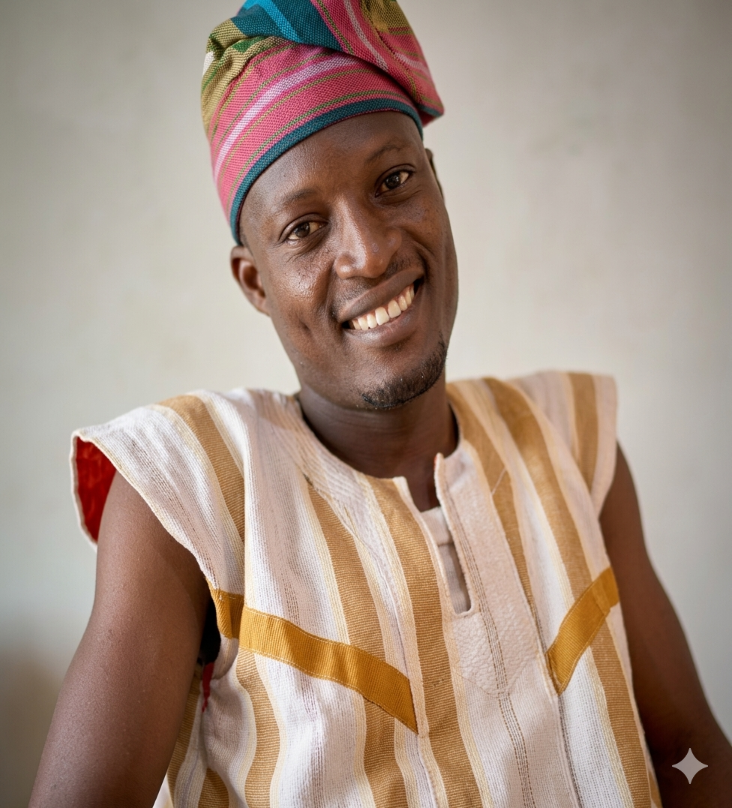

Bienvenue dans la famille
OROU YO
La mémoire de nos ancêtres, notre histoire, notre identité et notre héritage.
Découvrir
La mémoire de nos ancêtres, notre histoire, notre identité et notre héritage.
Découvrir

Ancêtre de la famille

Figure familiale importante

Membre de la descendance

Gardien de la mémoire familiale

Pendant longtemps, l'oralité a été la source privilégiée de l'histoire africaine. Comme le disait Amadou Hampâté Bâ : " La tradition orale est au cœur de l'histoire de l'Afrique ".
Cette plateforme a été créée afin de conserver la mémoire de nos ancêtres, de transmettre leurs valeurs et de permettre aux générations futures de connaître leurs origines.
Grâce aux témoignages des parents, des grands-parents et des personnes ressources, nous avons pu reconstruire l'arbre généalogique de la famille OROU YO.
Que cette histoire serve de guide aux générations futures.